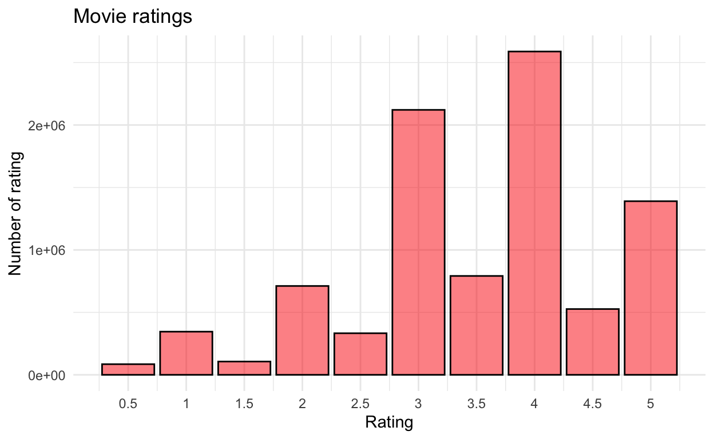
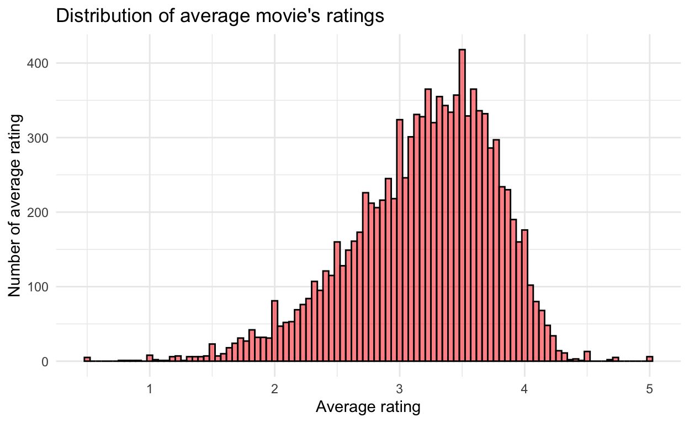
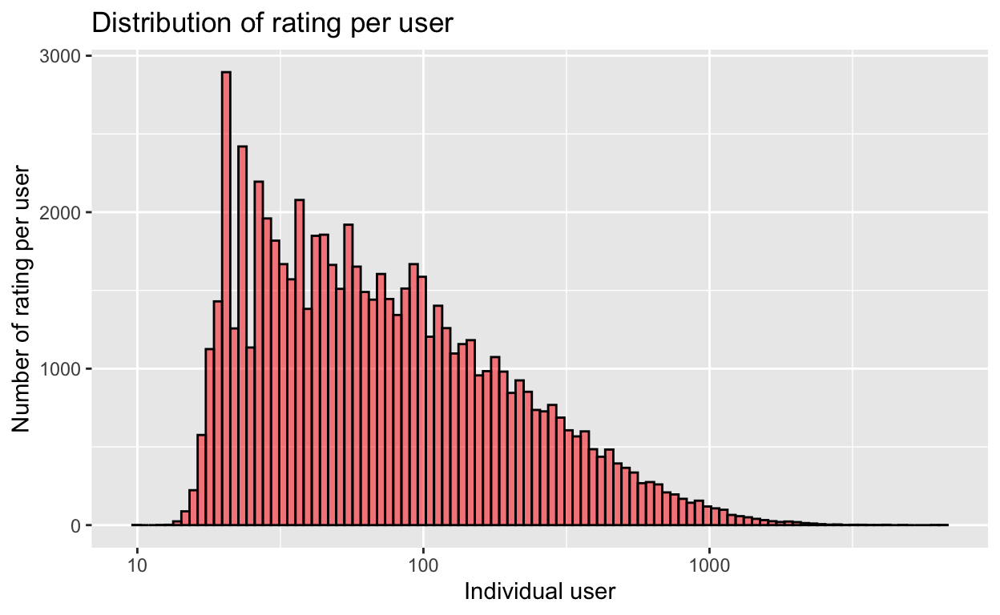
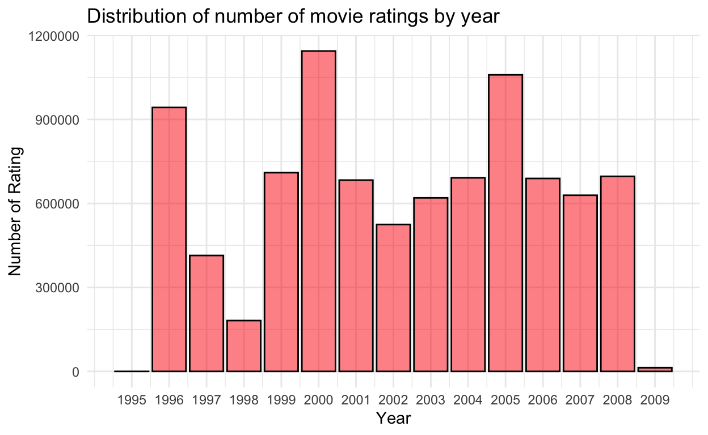
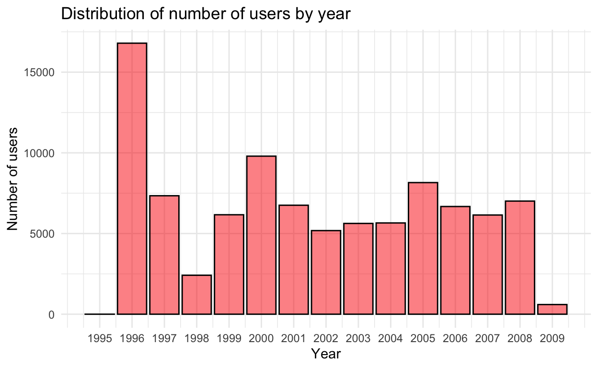
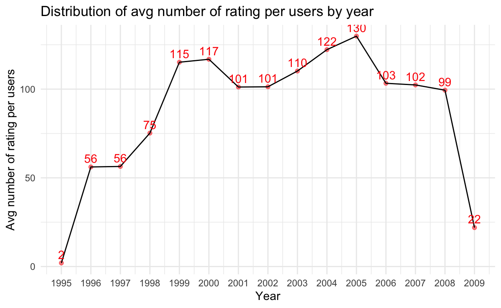

A ML project on MovieLens data.
Recommendation system is widely used in many different commercial applications, such as dating website, music streaming platform, or e-commerce website. The objective of the recommendation system is to predict the what the users want based on their preferences and others’ previous likings on the platform.
In this project, I will use movielens to build a recommendation system using machine learning techniques to get the best possible residual mean square error (RMSE), which the goal is to reach RMSE < 0.8649. The project will show three analytical methods, basic linear regression, regularization, and matrix factorization.
This paper will present in this order, Exploratory data analysis, Modeling, Validation set, and Conclusion,
The movielens dataset is an initiative created by the University of Minnesota GroupLens lab to study recommendation system. The website allows users to rate movies that is listed in the movielens website, which the complete dataset has about 26000000 ratings (from 2017 update). For this project, the dataset consists of total 10000054 observations and 6 variables, UserId, movieId, rating, timestamp, title, and genres.
First of all, download the file and use fread() to read the rating.dat, then vectorized the string in movie data.dat by str_split_fixed() and readLines(). Later, combine both ratings and movies into movielens as a dataframe.
After all the process above, movielens dataset is ready to separate into two sets by 90% and 10%, edx for training and validation for testing. The edx is further split into 2 sets by 80% and 20%, train_data and testing_data, the purpose here is to train the model, so it reach the target RMSE with the smaller set of edx then the model will be validate against the validation set.
ratings <- fread(text = gsub("::", "\t", readLines("/Users/andrewchen/Desktop/R/Data_Science/Harvard_edX/Git_project/ml-10M100K/ratings.dat")),
col.names = c("userId", "movieId", "rating", "timestamp"))
movies <- str_split_fixed(readLines("/Users/andrewchen/Desktop/R/Data_Science/Harvard_edX/Git_project/ml-10M100K/movies.dat"), "\\::", 3)
colnames(movies) <- c("movieId", "title", "genres")
# if using R 4.0 or later:
movies <- as.data.frame(movies) %>% mutate(movieId = as.numeric(movieId),
title = as.character(title),
genres = as.character(genres))
movielens <- left_join(ratings, movies, by = "movieId")
# Validation set will be 10% of MovieLens data
set.seed(1, sample.kind="Rounding") # if using R 3.5 or earlier, use `set.seed(1)`
test_index <- createDataPartition(y = movielens$rating, times = 1, p = 0.1, list = FALSE)
edx <- movielens[-test_index,]
temp <- movielens[test_index,]
# Make sure userId and movieId in validation set are also in edx set
validation <- temp %>%
semi_join(edx, by = "movieId") %>%
semi_join(edx, by = "userId")
# Add rows removed from validation set back into edx set
removed <- anti_join(temp, validation)
edx <- rbind(edx, removed)
rm(dl, ratings, movies, test_index, temp, movielens, removed)
# My own training/testing set
# train and test data
set.seed(1, sample.kind="Rounding")
test_index <- createDataPartition(y = edx$rating,
times = 1, p = 0.2, list = FALSE)
train_data <- edx[-test_index,]
temp <- edx[test_index,]
# Make sure userId and movieId in test set are also in train set
test_data <- temp %>%
semi_join(train_data, by = "movieId") %>%
semi_join(train_data, by = "userId")
# Add rows removed from test set back into train set
removed <- anti_join(temp, test_data)
train_data <- rbind(train_data, removed)
rm(test_index, temp, removed)
Classes 'data.table' and 'data.frame': 9000055 obs. of 6 variables:
$ userId : int 1 1 1 1 1 1 1 1 1 1 ...
$ movieId : num 122 185 292 316 329 355 356 362 364 370 ...
$ rating : num 5 5 5 5 5 5 5 5 5 5 ...
$ timestamp: int 838985046 838983525 838983421 838983392 838983392 838984474 838983653 838984885 838983707 838984596 ...
$ title : chr "Boomerang (1992)" "Net, The (1995)" "Outbreak (1995)" "Stargate (1994)" ...
$ genres : chr "Comedy|Romance" "Action|Crime|Thriller" "Action|Drama|Sci-Fi|Thriller" "Action|Adventure|Sci-Fi" ...
- attr(*, ".internal.selfref")=<externalptr> userId movieId rating timestamp title
1: 1 122 5 838985046 Boomerang (1992)
2: 1 185 5 838983525 Net, The (1995)
3: 1 292 5 838983421 Outbreak (1995)
4: 1 316 5 838983392 Stargate (1994)
5: 1 329 5 838983392 Star Trek: Generations (1994)
6: 1 355 5 838984474 Flintstones, The (1994)
genres
1: Comedy|Romance
2: Action|Crime|Thriller
3: Action|Drama|Sci-Fi|Thriller
4: Action|Adventure|Sci-Fi
5: Action|Adventure|Drama|Sci-Fi
6: Children|Comedy|Fantasy userId movieId rating timestamp
Min. : 1 Min. : 1 Min. :0.500 Min. :7.897e+08
1st Qu.:18124 1st Qu.: 648 1st Qu.:3.000 1st Qu.:9.468e+08
Median :35738 Median : 1834 Median :4.000 Median :1.035e+09
Mean :35870 Mean : 4122 Mean :3.512 Mean :1.033e+09
3rd Qu.:53607 3rd Qu.: 3626 3rd Qu.:4.000 3rd Qu.:1.127e+09
Max. :71567 Max. :65133 Max. :5.000 Max. :1.231e+09
title genres
Length:9000055 Length:9000055
Class :character Class :character
Mode :character Mode :character
From the bar chart below, you see that most ratings are located at 3 and 4.
edx %>% ggplot(aes(x = rating)) +
geom_bar(fill="#fc0303", col = "black", alpha=0.5) +
scale_x_continuous(breaks = seq(0.5,5, 0.5),
labels = seq(0.5,5, 0.5)) +
labs(title = "Movie ratings", y = "Number of rating", x = "Rating") +
theme_minimal()

The graph below show that the average movie’s rating is more or less natural distributed with a left skewed, which means the mean < median < mode.
edx %>% count(movieId, rating) %>% mutate(score = rating*n) %>%
group_by(movieId) %>% summarise(avg = sum(score)/sum(n)) %>%
ggplot(aes(x = avg)) +
theme_minimal() +
labs(title = "Distribution of average movie's ratings",
y = "Number of average rating", x = "Average rating") +
geom_histogram(bins = 100, fill = "#fc0303", col = "black", alpha=0.5)

The first graph below show that not all movies are getting the equal amount of ratings, it’s clearly that some movies get a lot more rating than others. From the list below show that top 15 rated movies are all blockbusters and the least 15 rated movies are more obscure than finding a needle in a haystack.
## some movies get rated more than others
edx %>%
count(movieId) %>%
ggplot(aes(n)) +
geom_histogram(bins = 100, fill = "#fc0303", col = "black", alpha=0.5) +
scale_x_log10() +
labs(title = "Distribution of number of movie's ratings",
y = "Number of ratings", x = "Individual movie")
edx %>%
count(movieId, title) %>% top_n(n = 15) %>%
arrange(desc(n))
movieId
1: 296
2: 356
3: 593
4: 480
5: 318
6: 110
7: 457
8: 589
9: 260
10: 150
11: 592
12: 1
13: 780
14: 590
15: 527
title
1: Pulp Fiction (1994)
2: Forrest Gump (1994)
3: Silence of the Lambs, The (1991)
4: Jurassic Park (1993)
5: Shawshank Redemption, The (1994)
6: Braveheart (1995)
7: Fugitive, The (1993)
8: Terminator 2: Judgment Day (1991)
9: Star Wars: Episode IV - A New Hope (a.k.a. Star Wars) (1977)
10: Apollo 13 (1995)
11: Batman (1989)
12: Toy Story (1995)
13: Independence Day (a.k.a. ID4) (1996)
14: Dances with Wolves (1990)
15: Schindler's List (1993)
n
1: 31362
2: 31079
3: 30382
4: 29360
5: 28015
6: 26212
7: 25998
8: 25984
9: 25672
10: 24284
11: 24277
12: 23790
13: 23449
14: 23367
15: 23193edx %>%
count(movieId, title) %>% top_n(n = -15) %>%
arrange(desc(n))
movieId title n
1: 3191 Quarry, The (1998) 1
2: 3226 Hellhounds on My Trail (1999) 1
3: 3234 Train Ride to Hollywood (1978) 1
4: 3356 Condo Painting (2000) 1
5: 3383 Big Fella (1937) 1
---
122: 64976 Hexed (1993) 1
123: 65006 Impulse (2008) 1
124: 65011 Zona Zamfirova (2002) 1
125: 65025 Double Dynamite (1951) 1
126: 65027 Death Kiss, The (1933) 1From the graph below, it shows that number of rating per user has an natural distribution with a right skewed, which means mean > median > mode. This clearly shows that only a few users rate a lot of movies and majorirty don’t.
## some users rated more movies than the others, shows clearly that most
edx %>%
count(userId) %>%
ggplot(aes(x = n)) +
geom_histogram(bins = 100, fill = "#fc0303", col = "black", alpha=0.5)+
scale_x_log10() +
labs(title = "Distribution of rating per user",
y = "Number of rating per user", x = "Individual user")

In ths graph shows that year 1996, 2000, and 2005 were all peak years for movie ratings compare to other years, but why is this the case? In the next graph I will try to explaim this phenomenon.
library(lubridate)
edx <- edx %>% mutate(year = year(as_datetime(timestamp, origin = "1970-01-01")))
edx %>% ggplot(aes(x = year)) +
geom_bar(fill="#fc0303", col = "black", alpha=0.5) +
scale_x_continuous(breaks=seq(1995,2009,1), labels=seq(1995,2009,1)) +
labs(title = "Distribution of number of movie ratings by year",
y = "Number of Rating", x = "Year") +
theme_minimal()

From this graph below shows the distribution of number of users by year, which you can see that 1996 had a large amount of users influx follow by 2000 and 2005, but this still can’t explain that year 1996 has less number of ratings than 2000 and 2005.
edx %>% count(year, userId) %>%
ggplot(aes(x = year)) +
geom_bar(fill = "#fc0303", col = "black", alpha=0.5) +
scale_x_continuous(breaks=seq(1995,2009,1), labels=seq(1995,2009,1)) +
labs(title = "Distribution of number of users by year",
y = "Number of users", x = "Year") +
theme_minimal()

In order to see why, first count the number of years which give you the total number of rating that year and save it as edx_1, then left join edx_1 to edx by year, count the total number of rating for individual users in each year follow by a group by year and total to count the total number of rating in each year. Lastly, mutate a new column for average number of rating per year by using the “total” column from edx_1.
From the graph below shows that year 1996 actually had one of the lower average number of rating per user, where as year 2000 and 2005 were the top 3 highest average number of rating per user.
edx_1 <- edx %>% group_by(year) %>% count()
a <- edx %>% left_join(edx_1, by = "year") %>% rename(total = n) %>%
count(year, userId, total) %>% group_by(year, total) %>%
count() %>% mutate(avgn = total/n)
a
# A tibble: 15 x 4
# Groups: year, total [15]
year total n avgn
<dbl> <int> <int> <dbl>
1 1995 2 1 2
2 1996 942772 16796 56.1
3 1997 414101 7341 56.4
4 1998 181634 2415 75.2
5 1999 709893 6164 115.
6 2000 1144349 9795 117.
7 2001 683355 6754 101.
8 2002 524959 5182 101.
9 2003 619938 5626 110.
10 2004 691429 5656 122.
11 2005 1059277 8157 130.
12 2006 689315 6674 103.
13 2007 629168 6147 102.
14 2008 696740 7010 99.4
15 2009 13123 598 21.9a %>% ggplot(aes(x = year, y = avgn)) +
geom_point(col = "#fc0303", alpha=0.5) + geom_line() +
geom_text(aes(label = round(avgn)), vjust = -0.5, col = "#fc0303") +
scale_x_continuous(breaks=seq(1995,2009,1), labels=seq(1995,2009,1)) +
labs(title = "Distribution of avg number of rating per users by year",
y = "Avg number of rating per users", x = "Year") +
theme_minimal()

How do one assess the accuracy of our model prediction? Residual mean square error (RMSE), but first one need to look at mean square error (MSE). \[ \mbox{MSE} = {\frac{1}{N} \sum_{u,i}^{} \left( \hat{y}_{u,i} - y_{u,i} \right)^2 } \] MSE measures the average of the square of the difference of predicted value and real value. In this method larger error will weight more than smaller error, if the error is 1 its squared error is also 1, but if the error is 0.1 the square error is 0.01, which the former sqaure error would be 100 times larger than the latter one. Another issue is that because the unit of the error is squared so it would be hard to interpret the results, hence I use RMSE which the sqaure root will return the same unit. However, there are other ways to meausre accuracy such as mean absolute error (MAE). Here denote \({y}_{u,i}\) as the rating of movie\(i\) by user\(u\), \(\hat{y}_{u,i}\) as the prediction of the movie ratings, and \(N\) as total combination movie\(i\) and user\(u\).
\[ \mbox{RMSE} = \sqrt{\frac{1}{N} \sum_{u,i}^{} \left( \hat{y}_{u,i} - y_{u,i} \right)^2 } \]
Since I am trying to predict movie ratings, what would be the a good initial guess for all the ratings in the dataset? I could pick any number, but I am trying to get the lowest RMSE and the average would minimize RMSE, hence the base model is the average of all movie ratings in traing set (the observed value) \(\mu\) + the independent error \(\varepsilon\).
\[ Y_{u,i} = \mu + \varepsilon_{u,i} \]
From the data exploration in section 3, it shows that some movies are highly rated some not, this variability can be explain by the mean difference of observed rating \(Y_{u,i}\) and average rating of all movies \(\mu\).
\[ b_i = {\frac{1}{N} \sum_{i}^{}(Y_{u,i} - \mu)} \]
From the above \(b_i\), then add it back to the base model.
\[ Y_{u,i} = \mu + b_i + \varepsilon_{u,i} \]
Similar to movie effect, user variable also show that some give a lot of high rating and some not, this variability can be eplain by the mean difference of observed rating \(Y_{u,i}\), average rating of all movies \(\mu\), and movie effect \(b_i\). \[ b_u = {\frac{1}{N} \sum_{i}^{}(Y_{u,i} - \mu - b_i)} \]
From the above \(b_u\), then add it back the movie effect model.
\[ Y_{u,i} = \mu + b_i + b_u + \varepsilon_{u,i} \]
Now the model is ready to be tested, let’s see how it perform. From the rmse dataframe below shows that the RMSE of the base model is 1.06, with movie effect it improves to 0.94 and with user effect it further improve RMSE to 0.87. The linear model improve RMSE about 18%, but this is still not enough to reach the target RMSE < 0.8649, so how do one improve from here?
# First Model: Overall average rating
mu <- mean(train_data$rating)
rmse <- tibble(Method = "Base Model",
RMSE = RMSE(test_data$rating, mu))
# Second model: movie effect
movie_avgs <- train_data %>%
group_by(movieId) %>%
summarize(b_i = mean(rating - mu))
predicted_ratings <- test_data %>%
left_join(movie_avgs, by='movieId') %>%
mutate(pred = mu +b_i) %>%
pull(pred)
rmse <- bind_rows(rmse,
tibble(Method = "Base + b_i",
RMSE = RMSE(test_data$rating, predicted_ratings)))
# Third model: user effect
user_avgs <- train_data %>%
left_join(movie_avgs, by='movieId') %>%
group_by(userId) %>%
summarize(b_u = mean(rating - mu - b_i))
predicted_ratings <- test_data %>%
left_join(movie_avgs, by='movieId') %>%
left_join(user_avgs, by='userId') %>%
mutate(pred = mu + b_i + b_u) %>%
pull(pred)
rmse <- bind_rows(rmse,
tibble(Method = "Base + b_i + b_u",
RMSE = RMSE(test_data$rating, predicted_ratings)))
print.data.frame(rmse, digits = 6)
Method RMSE
1 Base Model 1.059904
2 Base + b_i 0.943743
3 Base + b_i + b_u 0.865932Before getting into regularization, let’s check what is the top mistake rating the linear model predicted. “From Justin to Kelly” a rather obscure movie getting a 5 rating with a large positive residual indicates that this user rated this movie a lot higher than others, where as “The Shawshank Redemption” a well known critically acclaimed movie getting a 0.5 rating with a small negative residual show that this user rated this movie a lot lower than others.
userId movieId rating timestamp title
1: 26423 6483 5.0 1097653302 From Justin to Kelly (2003)
2: 2507 318 0.5 1111809069 Shawshank Redemption, The (1994)
3: 7708 318 0.5 1136745552 Shawshank Redemption, The (1994)
4: 9568 318 0.5 1165693345 Shawshank Redemption, The (1994)
5: 9975 318 0.5 1165764304 Shawshank Redemption, The (1994)
6: 10749 318 0.5 1137685578 Shawshank Redemption, The (1994)
7: 13496 318 0.5 1167308184 Shawshank Redemption, The (1994)
8: 24312 318 0.5 1096667629 Shawshank Redemption, The (1994)
9: 25239 318 0.5 1097222585 Shawshank Redemption, The (1994)
10: 26260 318 0.5 1224724866 Shawshank Redemption, The (1994)
genres b_i residual
1: Musical|Romance -2.6672397 4.154762
2: Drama 0.9448401 -3.957318
3: Drama 0.9448401 -3.957318
4: Drama 0.9448401 -3.957318
5: Drama 0.9448401 -3.957318
6: Drama 0.9448401 -3.957318
7: Drama 0.9448401 -3.957318
8: Drama 0.9448401 -3.957318
9: Drama 0.9448401 -3.957318
10: Drama 0.9448401 -3.957318Now let’s check the 10 best movie base on our movie effect \(b_i\), without even googling these title I think it is fair to say these movies are definitely obscure, “Hellhounds on My Trail” is the movie effect model best rated movie, from IMDB as a reference this documentary film only has 28 ratings.
[1] "Hellhounds on My Trail (1999)"
[2] "Who's Singin' Over There? (a.k.a. Who Sings Over There) (Ko to tamo peva) (1980)"
[3] "Satan's Tango (Sátántangó) (1994)"
[4] "Shadows of Forgotten Ancestors (1964)"
[5] "Money (Argent, L') (1983)"
[6] "Fighting Elegy (Kenka erejii) (1966)"
[7] "Sun Alley (Sonnenallee) (1999)"
[8] "Aerial, The (La Antena) (2007)"
[9] "Blue Light, The (Das Blaue Licht) (1932)"
[10] "More (1998)" This is the 10 worst movie, also again these titles are beyond a hipster’s taste, but I must admit that I would want to watch “SuperBabies: Baby Geniuses 2” and “Da Hip Hop Witch”, the former had John Volt starting and the latter had Eminem.
[1] "Besotted (2001)"
[2] "Hi-Line, The (1999)"
[3] "Accused (Anklaget) (2005)"
[4] "Confessions of a Superhero (2007)"
[5] "War of the Worlds 2: The Next Wave (2008)"
[6] "SuperBabies: Baby Geniuses 2 (2004)"
[7] "From Justin to Kelly (2003)"
[8] "Legion of the Dead (2000)"
[9] "Disaster Movie (2008)"
[10] "Hip Hop Witch, Da (2000)" So are these movies even get rated that much? From the two printed lists below, it showed that all of these movies are obscure titles most only get rated once. These predictions are untrustworthy, a large residual returns large RMSE, which is not what the model is aiming for. Hence, this is where the regularization comes in to penalized large estimates that are from small sample sizes.
[1] 1 3 2 1 1 1 1 1 1 6 [1] 1 1 1 1 2 40 168 4 28 11How do one model regularization? Without going into too much detail of math, regularization is to minimize the variability of the effect sizes, in this case would be movie effect \(b_i\) and user effect \(b_u\).
The first term is the least square of movie effect + the penalty added to the movie effect.
\[ \sum_{u,i} \left(y_{u,i} - \mu - b_i\right)^2 + \lambda \sum_{i} b_i^2 \]
By using calculus it can show the equation that minimize \(b_i\), \(n_i\) here denotes the number of ratings per movie \(i\). When \(n_i\) gets really large, the penalty \(\lambda\) can be ignored because a very large \(n_i + \lambda \approx n_i\), but if \(n_i\) is very small \(\hat{b}_i(\lambda)\) will be reduced towards 0, becuase the larger \(\lambda\) the more it reduce.
\[ \hat{b}_i(\lambda) = \frac{1}{\lambda + n_i} \sum_{u=1}^{n_i} \left(Y_{u,i} - \hat{\mu}\right) \]
The first term is the least square of user effect + the penalty added to the user effect, \(n_u\) here denotes the number of ratings per user \(u\). The following equation are the same as above beside adding user effect.
\[ \sum_{u,i} \left(y_{u,i} - \mu - b_i - b_u\right)^2 + \lambda \sum_{u} b_u^2 \]
\[ \hat{b}_u(\lambda) = \frac{1}{\lambda + n_u} \sum_{i=1}^{n_u} \left(Y_{u,i} - \hat{\mu} - \hat{b_i}\right) \]
After the above explaination, it is ready to test the linear model with regularization.
lambdas <- seq(0,10, 0.25)
regular <- sapply(lambdas, function(l){
mu <- mean(train_data$rating)
b_i <- train_data %>%
group_by(movieId) %>%
summarize(b_i = sum(rating - mu)/(n()+l))
b_u <- train_data %>%
left_join(b_i, by="movieId") %>%
group_by(userId) %>%
summarize(b_u = sum(rating - b_i - mu)/(n()+l))
predicted_ratings <-
test_data %>%
left_join(b_i, by = "movieId") %>%
left_join(b_u, by = "userId") %>%
mutate(pred = mu + b_i + b_u) %>%
pull(pred)
return(RMSE(predicted_ratings, test_data$rating))
})
tibble(l = lambdas, rmses = regular) %>%
ggplot(aes(x = l, y = rmses)) +
geom_point() +
theme_minimal()
l <- lambdas[which.min(regular)]
mu <- mean(train_data$rating)
b_i <- train_data %>%
group_by(movieId) %>%
summarize(b_i = sum(rating - mu)/(n()+l))
b_u <- train_data %>%
left_join(b_i, by="movieId") %>%
group_by(userId) %>%
summarize(b_u = sum(rating - b_i - mu)/(n()+l))
predicted_ratings <-
test_data %>%
left_join(b_i, by = "movieId") %>%
left_join(b_u, by = "userId") %>%
mutate(pred = mu + b_i + b_u) %>%
pull(pred)
rmse <- bind_rows(rmse,
tibble(Method = "Regularization",
RMSE = RMSE(test_data$rating, predicted_ratings)))
print.data.frame(rmse, digits = 6)
Method RMSE
1 Base Model 1.059904
2 Base + b_i 0.943743
3 Base + b_i + b_u 0.865932
4 Regularization 0.865242Matrix factorization (MF) is widely use in tackling recommender system problem when predicting unobserved rating based on the observed rating. The basic idea is to reduce the rating matrix \(R_{m\times n}\) to user matrix \(P_{k\times m}\) and movie \(Q_{k\times n}\) so that \(R \approx P \times Q\). From the 4x4 matrix below shows a simple example of what MF transform the original data. From more detail mathematical explaination please check recosystem and Supplementary Materials for “LIBMF”, as this project is intend to focus on the appling techniques of machine learning.
movie.1 movie.2 movie.3 movie.4
user.1 1 1 4 NA
user.2 1 NA 5 2
user.3 1 3 NA 3
user.4 1 NA 3 4Here, I use recosystem package to utilize the power of multilcore CPUs for computing speed.
The recosystem prove a step by step guide: 1. Transform your train and test data with data_memory() 2. Create a model object with Reco() 3. Tuning the parameters with $tune() 4. Train model with $train 5. Predict with $predict
Doing the MF process will take quite a bit time from my laptop takes about 30 to 50 minutes, from the rmse table MF method significantly reduce RMSE to 0.7859012 which is about 9% reduce from the regularization model and it also reach our target RMSE < 0.8649.
library(recosystem)
# transform train data
train_reco <- with(train_data, data_memory(user_index = userId,
item_index = movieId,
rating = rating))
# transform test data
test_reco <- with(test_data, data_memory(user_index = userId,
item_index = movieId,
rating = rating))
# create model object
r <- recosystem::Reco()
# tuning parameter
opts <- r$tune(train_reco, opts = list(dim = c(10, 20, 30),
lrate = c(0.1, 0.2),
costp_l2 = c(0.01, 0.1),
costq_l2 = c(0.01, 0.1),
nthread = 4, niter = 10))
# training model
r$train(train_reco, opts = c(opts$min, nthread = 4, niter = 20))
iter tr_rmse obj
0 0.9952 1.0048e+07
1 0.8787 8.0745e+06
2 0.8474 7.5113e+06
3 0.8262 7.1654e+06
4 0.8088 6.9086e+06
5 0.7953 6.7279e+06
6 0.7842 6.5845e+06
7 0.7747 6.4728e+06
8 0.7664 6.3784e+06
9 0.7592 6.2986e+06
10 0.7529 6.2306e+06
11 0.7473 6.1725e+06
12 0.7423 6.1270e+06
13 0.7379 6.0826e+06
14 0.7338 6.0457e+06
15 0.7299 6.0102e+06
16 0.7266 5.9802e+06
17 0.7234 5.9508e+06
18 0.7206 5.9270e+06
19 0.7179 5.9030e+06# testing model
y_hat_reco <- r$predict(test_reco, out_memory())
# RMSE
rmse <- bind_rows(rmse,
tibble(Method = "MF", RMSE = RMSE(test_data$rating, y_hat_reco)))
print.data.frame(rmse, digits = 6)
Method RMSE
1 Base Model 1.059904
2 Base + b_i 0.943743
3 Base + b_i + b_u 0.865932
4 Regularization 0.865242
5 MF 0.790857In the predictions above are all using the 20% of edx as testing data, I done training the model, it is ready to employ on validation set. From the RMSE reports from each method below, besides base model and base model + \(b_i\) are performing slightly worst than the test_data, all other models performs better and are able to reach the target RMSE 0.7826 < 0.8649.
# First Model: Overall average rating
mu <- mean(edx$rating)
valid <- tibble(Method = "Base Model",
RMSE = RMSE(validation$rating, mu))
print.data.frame(valid, digits = 6)
Method RMSE
1 Base Model 1.0612# Second model: movie effect
movie_avgs <- edx %>%
group_by(movieId) %>%
summarize(b_i = mean(rating - mu))
predicted_ratings <- validation %>%
left_join(movie_avgs, by='movieId') %>%
mutate(pred = mu +b_i) %>%
pull(pred)
valid <- bind_rows(valid,
tibble(Method = "Base + b_i",
RMSE = RMSE(validation$rating, predicted_ratings)))
print.data.frame(valid, digits = 6)
Method RMSE
1 Base Model 1.061202
2 Base + b_i 0.943909# Third model: user effect
user_avgs <- edx %>%
left_join(movie_avgs, by='movieId') %>%
group_by(userId) %>%
summarize(b_u = mean(rating - mu - b_i))
predicted_ratings <- validation %>%
left_join(movie_avgs, by='movieId') %>%
left_join(user_avgs, by='userId') %>%
mutate(pred = mu + b_i + b_u) %>%
pull(pred)
valid <- bind_rows(valid,
tibble(Method = "Base + b_i + b_u",
RMSE = RMSE(validation$rating, predicted_ratings)))
print.data.frame(valid, digits = 6)
Method RMSE
1 Base Model 1.061202
2 Base + b_i 0.943909
3 Base + b_i + b_u 0.865349lambdas <- seq(0,10, 0.25)
regular <- sapply(lambdas, function(l){
mu <- mean(edx$rating)
b_i <- edx %>%
group_by(movieId) %>%
summarize(b_i = sum(rating - mu)/(n()+l))
b_u <- edx %>%
left_join(b_i, by="movieId") %>%
group_by(userId) %>%
summarize(b_u = sum(rating - b_i - mu)/(n()+l))
predicted_ratings <-
validation %>%
left_join(b_i, by = "movieId") %>%
left_join(b_u, by = "userId") %>%
mutate(pred = mu + b_i + b_u) %>%
pull(pred)
return(RMSE(validation$rating, predicted_ratings))
})
tibble(l = lambdas, rmses = regular) %>%
ggplot(aes(x = l, y = rmses)) +
geom_point() +
theme_minimal()
l <- lambdas[which.min(regular)]
mu <- mean(edx$rating)
b_i <- edx %>%
group_by(movieId) %>%
summarize(b_i = sum(rating - mu)/(n()+l))
b_u <- edx %>%
left_join(b_i, by="movieId") %>%
group_by(userId) %>%
summarize(b_u = sum(rating - b_i - mu)/(n()+l))
predicted_ratings <-
validation %>%
left_join(b_i, by = "movieId") %>%
left_join(b_u, by = "userId") %>%
mutate(pred = mu + b_i + b_u) %>%
pull(pred)
valid <- bind_rows(valid,
tibble(Method = "Regularization",
RMSE = RMSE(validation$rating, predicted_ratings)))
print.data.frame(valid, digits = 6)
Method RMSE
1 Base Model 1.061202
2 Base + b_i 0.943909
3 Base + b_i + b_u 0.865349
4 Regularization 0.864817# transform train data
train_edx <- with(edx, data_memory(user_index = userId,
item_index = movieId,
rating = rating))
# transform test data
test_vali <- with(validation, data_memory(user_index = userId,
item_index = movieId,
rating = rating))
# create model object
r <- recosystem::Reco()
# tuning parameter
opts <- r$tune(train_edx, opts = list(dim = c(10, 20, 30),
lrate = c(0.1, 0.2),
costp_l2 = c(0.01, 0.1),
costq_l2 = c(0.01, 0.1),
nthread = 4, niter = 10))
# training model
r$train(train_edx, opts = c(opts$min, nthread = 4, niter = 20))
iter tr_rmse obj
0 0.9741 1.2022e+07
1 0.8732 9.8861e+06
2 0.8407 9.1956e+06
3 0.8175 8.7638e+06
4 0.8008 8.4680e+06
5 0.7883 8.2641e+06
6 0.7783 8.1086e+06
7 0.7700 7.9870e+06
8 0.7631 7.8901e+06
9 0.7573 7.8125e+06
10 0.7522 7.7451e+06
11 0.7477 7.6867e+06
12 0.7437 7.6379e+06
13 0.7401 7.5968e+06
14 0.7368 7.5580e+06
15 0.7338 7.5264e+06
16 0.7310 7.4960e+06
17 0.7285 7.4678e+06
18 0.7262 7.4451e+06
19 0.7239 7.4222e+06# testing model
y_hat_edx <- r$predict(test_vali, out_memory())
# RMSE
valid <- bind_rows(valid,
tibble(Method = "MF", RMSE = RMSE(validation$rating, y_hat_edx)))
print.data.frame(valid, digits = 6)
Method RMSE
1 Base Model 1.061202
2 Base + b_i 0.943909
3 Base + b_i + b_u 0.865349
4 Regularization 0.864817
5 MF 0.782457The initial base model is the mean of all movie ratings, a rather simple approach without catching other variabilities and effects in movies and users, which RMSE is about 1.061. Once I added movie and user effect, the RMSE is reduced to 0.8653, with regularization I added penalty term for both movie and user effect the RMSE is reduced to 0.8648. By using regularization the RMSE reaches the initial target, RMSE < 0.8649, but to further improve the model I employed matrix factorization with recosystem, this method reduced RMSE massively to 0.7826.
Matrix Factorization comes with a cost that it needs a machine equipped with strong computational CPUs and memories to run, considering the movielens dataset in this project only has about 10 million observations and it took about 30 minutes to process let alone a dataset that is much larger. Also, my model only have two features, where as the model implemented by Netflix or Amazon have a lot more features to predict user’s preferences, such as movie actors, genres, groups, etc.
Since this a project about applying machine learning techniques, I did not get in depth into the mathematic behind regularization and matrix factorization. In addition, I did not touch on two other commonly used filtering systems, content based and collaborative filtering. Do check out recommendarlab, and recommender system on wikipedia for further studies.
If you see mistakes or want to suggest changes, please create an issue on the source repository.
Text and figures are licensed under Creative Commons Attribution CC BY 4.0. Source code is available at https://github.com/andrewyimingchen/Three-256, unless otherwise noted. The figures that have been reused from other sources don't fall under this license and can be recognized by a note in their caption: "Figure from ...".
For attribution, please cite this work as
Chen (2021, March 30). Three-256: Machine Learning on MovieLens. Retrieved from https://andrewyimingchen.github.io/Three-256/posts/2021-04-01-movielens/
BibTeX citation
@misc{chen2021machine,
author = {Chen, Andrew},
title = {Three-256: Machine Learning on MovieLens},
url = {https://andrewyimingchen.github.io/Three-256/posts/2021-04-01-movielens/},
year = {2021}
}